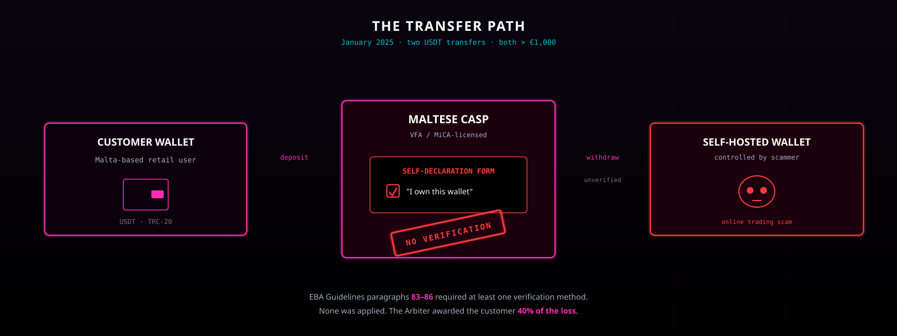
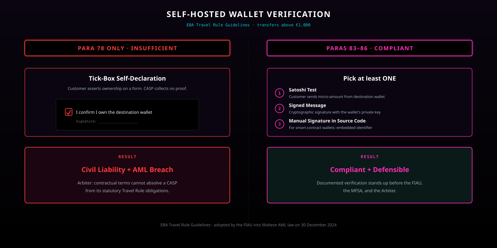
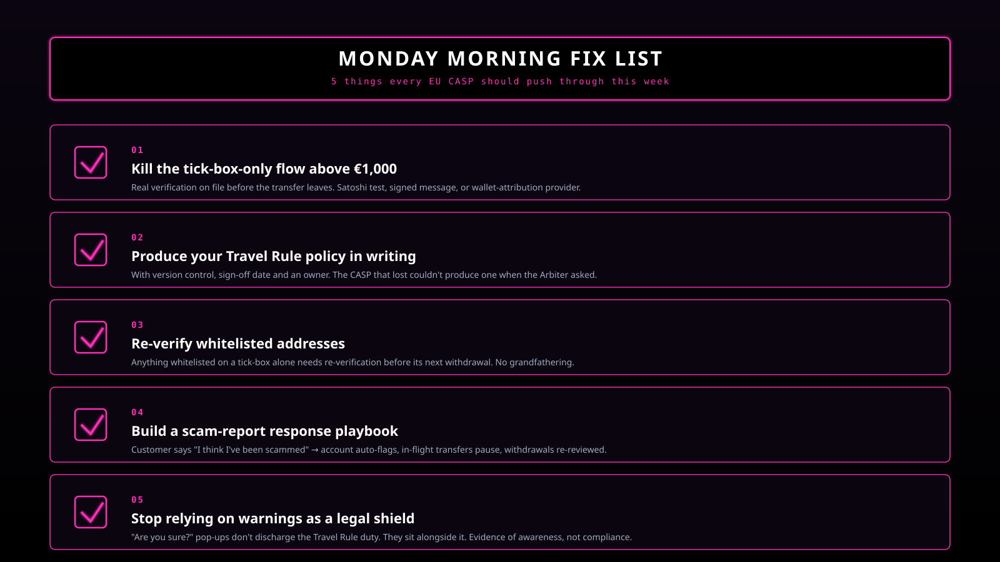
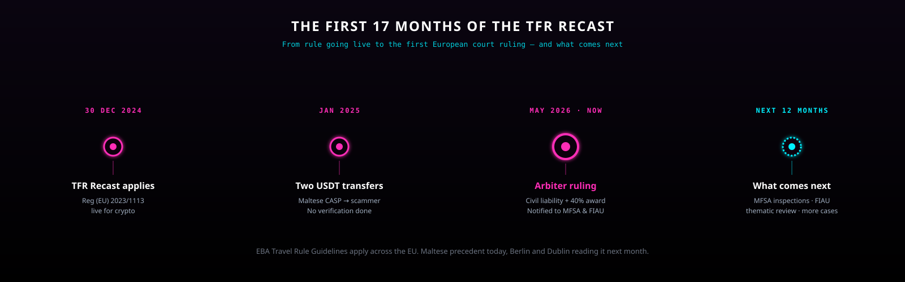

For four months, the recast Transfer of Funds Regulation has been in force without anyone knowing what enforcement would actually look like. Now we have an answer. And it isn't from the AML supervisor everyone was watching.
A Maltese-licensed CASP let two USDT transfers leave for a self-hosted wallet controlled by a scammer. The customer ticked "I own this wallet" on a form. No verification was done. The Arbiter ruled this breached Travel Rule duties under the EBA Guidelines, found civil liability under the CASP's duty of care, and awarded 40% of the loss. The decision has been formally notified to both the MFSA and the FIAU.
What actually happened

Two USDT transfers. January 2025. Both above €1,000. Sent from a customer wallet held at a Maltese-licensed VFA / MiCA service provider, to a self-hosted Tron wallet — controlled, as it later turned out, by an online trading scam.
The customer had completed a self-declaration form ticking the box "I own this wallet." The CASP did not verify ownership any further. The transfers went through. The funds vanished.
The customer complained to the Office of the Arbiter for Financial Services in Valletta, the statutory tribunal that handles consumer disputes against licensed financial service providers in Malta.
The CASP's defence was elegant: the Arbiter has no jurisdiction over AML compliance — that belongs to the FIAU under Chapter 373 of the Laws of Malta. Travel Rule obligations are AML obligations. End of argument.
The Arbiter rejected it.
↳ tx1: usdt > €1,000
↳ tx2: usdt > €1,000
↳ ownership.verification = false
↳ defence: tick-box.signed
↳ result: arbiter / 40% award
The jurisdictional move that changes everything
This is the part that compliance teams across Europe need to read twice.
The Arbiter accepted he has no power to find money laundering took place or to sanction a CASP for AML breaches — that remains the FIAU's exclusive remit.
But he drew a sharp distinction:
- Enforcing AML = FIAU's job
- Assessing whether a Travel Rule breach harmed a financial consumer = the Arbiter's job, under Cap. 555
Anchor points: Article 19(3) of Cap. 555, the existing Court of Appeal authority confirming that VFA service providers owe fiduciary obligations to clients, and Article 66 of MiCA, which codifies the duty to act honestly, fairly, professionally and in clients' best interests.
The implication is simple and brutal: every Travel Rule failure is now a potential civil claim. A Maltese CASP can be in front of the FIAU in Pieta and in front of the Arbiter in Valletta for the same operational gap, on the same facts, at the same time.
That doubles the exposure.
The verification rule that was broken

The CASP's substantive defence relied on paragraph 78 of the EBA Travel Rule Guidelines — which lets a CASP collect transfer information directly from the customer where it cannot retrieve it via technical means. Their reading: a signed self-declaration is enough.
The Arbiter pointed instead to paragraphs 83–86 of the same Guidelines — the ones the FIAU formally adopted into Maltese AML law on 30 December 2024. These deal specifically with transfers above €1,000 to or from self-hosted wallets, and they require the CASP to use at least one verification method:
- A Satoshi test (customer sends a small amount from the destination wallet to prove control)
- A signed message (customer cryptographically signs a specific message with the wallet's key)
- A manual signature in source code (for smart-contract wallets)
- An equivalent technical method (wallet-attribution providers like Notabene, 21Analytics)
The CASP produced no evidence that any of these was applied. Worse: when the Arbiter ordered it to produce its internal Travel Rule policies and procedures, it didn't have any to produce.
That second part is the one that should keep CIOs up at night. Missing the evidence is bad. Missing the policy itself is institutional.
Why the award was 40%, not 100%
The customer wasn't blameless and the Arbiter said so. She had been coached over Telegram by the scammer, ticked the ownership box knowing she was being guided, and ignored the platform's generic warning pop-ups.
That contributory negligence reduced the award. It did not eliminate it.
The line that does the work in the decision: contractual terms, generic warnings, and customer self-certification cannot absolve a CASP from its statutory Travel Rule obligations.
If you've been treating warning banners as a legal shield, this is the moment to stop.
The Monday morning fix list

Five things every CASP in the EU should push through this week. The decision will travel beyond Malta — Maltese precedent today, Berlin and Dublin reading it next month.
- Kill the tick-box-only flow for self-hosted withdrawals above €1,000. You need a real verification method on file before the transfer leaves. Document which, when, and by whom.
- Produce your Travel Rule policy in writing, with version control. If you can't, today, send a PDF with a sign-off date and an owner, you have the same exposure as the CASP that lost.
- Re-verify whitelisted addresses. A wallet whitelisted in 2023 with nothing but a tick-box should be re-verified before its next withdrawal.
- Build a scam-report response playbook. The moment a customer says "I think I've been scammed," the account auto-flags, in-flight transfers pause, and pending self-hosted withdrawals get re-reviewed.
- Stop relying on warnings as a legal shield. In a complaint, generic pop-ups will be evidence of awareness, not of compliance.
What's coming next

The decision has been formally notified to both the MFSA and the FIAU. That is not a courtesy. It is a flare.
Three things to expect in the next 12 months:
- MFSA inspections asking, very specifically, "show me the verification method you used for self-hosted withdrawals above €1,000."
- FIAU thematic review — given its pattern of publishing anonymised findings, expect this case to surface in its 2026 annual report.
- More complaints. Malta is one of the densest concentrations of licensed CASPs per capita in the EU. This is the first. It will not be the last.
And it won't stop at the Maltese border. The EBA Guidelines apply across the EU. The duty-of-care logic is portable. Every consumer-protection regulator in Europe now has a template ruling to copy.
For CASPs: the era of treating the Travel Rule as a paper exercise is over. A self-declaration tick-box is no longer a defence — you need a documented, verifiable ownership check for every self-hosted withdrawal above €1,000. Get your written Travel Rule policy in order, today.
For consumers: if you've been a victim of a crypto scam routed through a Maltese-licensed platform, this ruling means you may have a civil remedy — even where the AML enforcement route is closed to you.